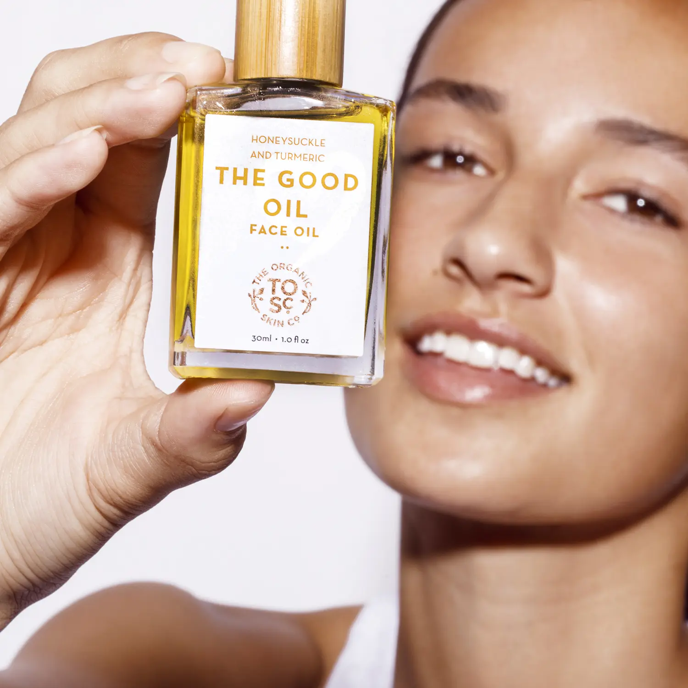
Senior strategy, hands-on execution
10+ years
Shaping stories, launching products & creating moments that earn attention
Boutique PR for beauty, fashion, wellness & lifestyle
CMarie PR builds visibility for products, founders & cultural brands through earned media, creator partnerships & memorable brand experiences.

Built around the business goal
Every partnership begins with a clear point of view, then expands across the channels and moments that can move the brand forward.
Start with the priority
Recommended PR mix
Clarify the product story, build press-ready assets & introduce the launch through highly targeted media and product sampling.
From launch moments to always-on press support, we build the stories, materials & relationships that help brands get discovered and stay part of the conversation.
Thoughtful product seeding that puts the right products in the hands of relevant editors, producers, creators & tastemakers.
Creator programs built around fit, purpose & long-term value, from targeted gifting to paid partnerships and brand experiences.
From focused press previews to larger cultural moments, support can scale from communications strategy to full production through a custom scope.
Selected work & experience
A selection of beauty, wellness, fashion & lifestyle work completed through agency consulting partnerships. Each engagement is presented according to the work personally led by Crisanta.
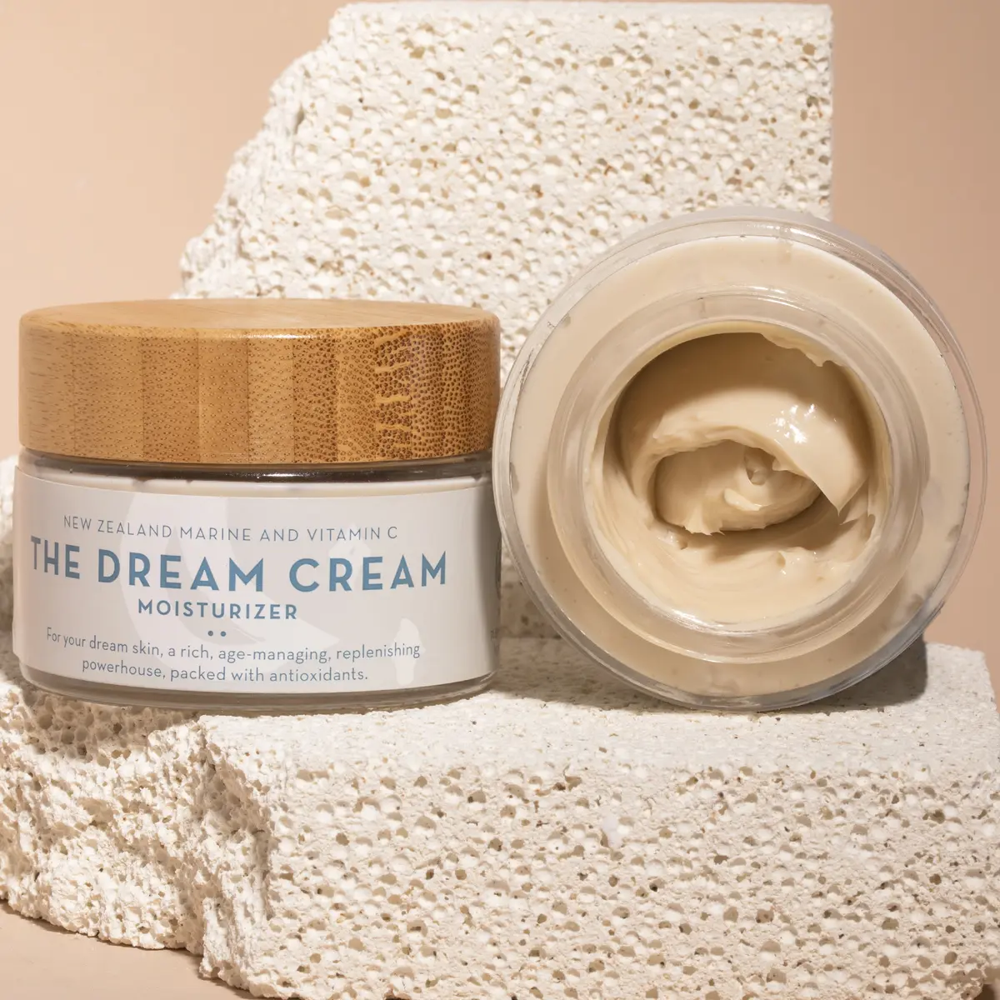
U.S. visibility through product storytelling, targeted media sampling & mission-led angles including the brand’s One Product One Tree initiative.
Selected coverage · NewBeauty · mindbodygreen · EcoCult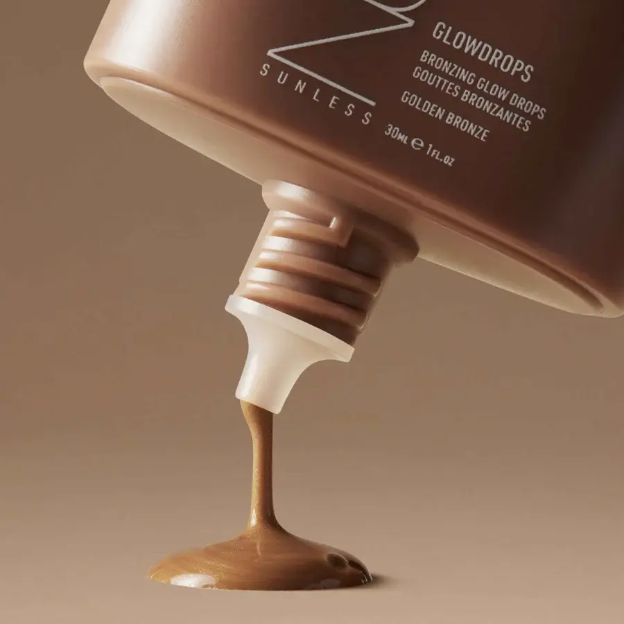
Product-focused media relations & sampling around sunless tanning and body-care launches, translating product innovation into timely beauty stories.
Selected coverage · Vogue · NewBeauty · Forbes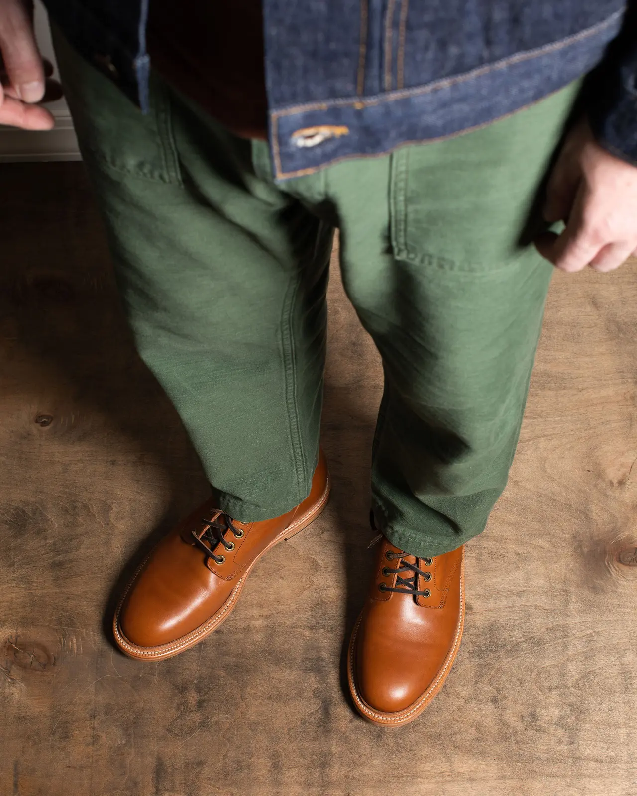
Targeted menswear and product-review outreach designed to put craftsmanship in front of high-intent style audiences.
Selected coverage · Dappered · Business Insider · ForbesSelected career coverage
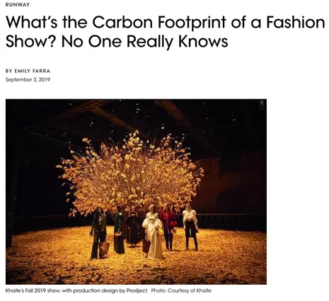
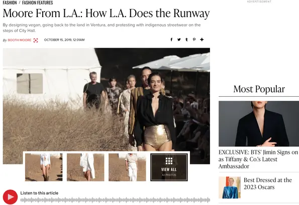
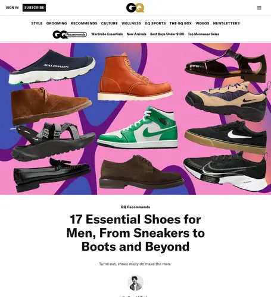
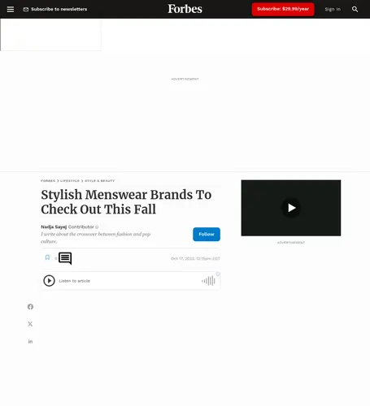
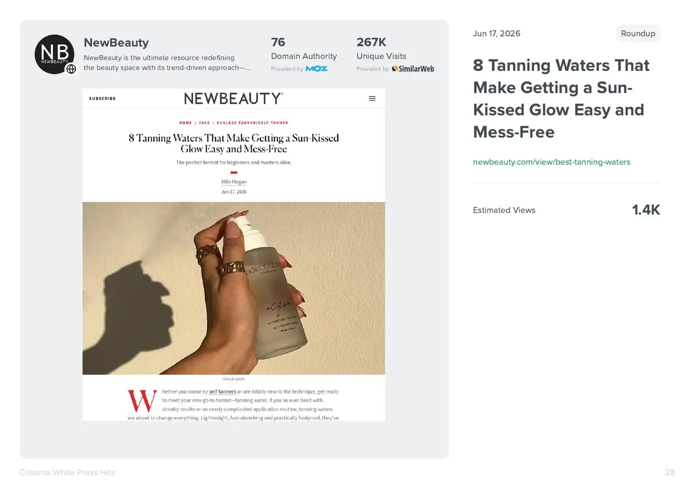
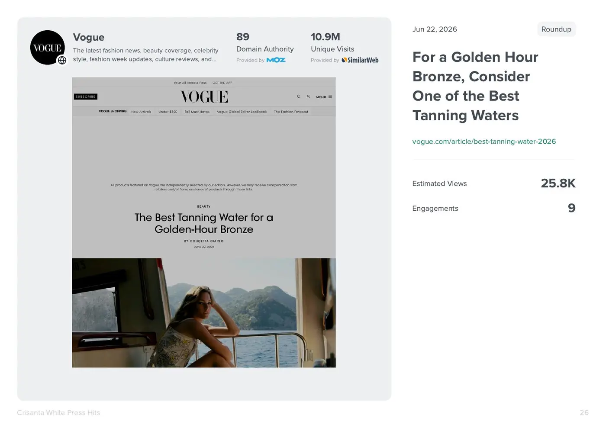
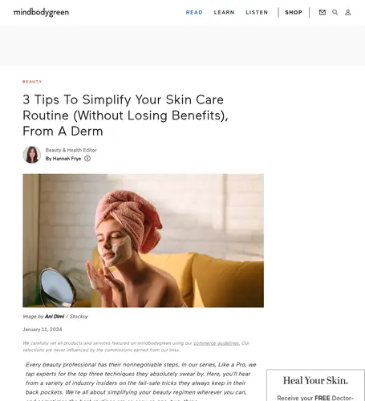
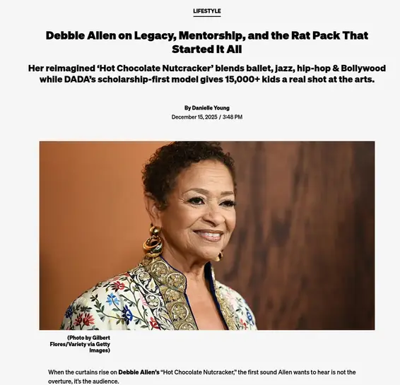
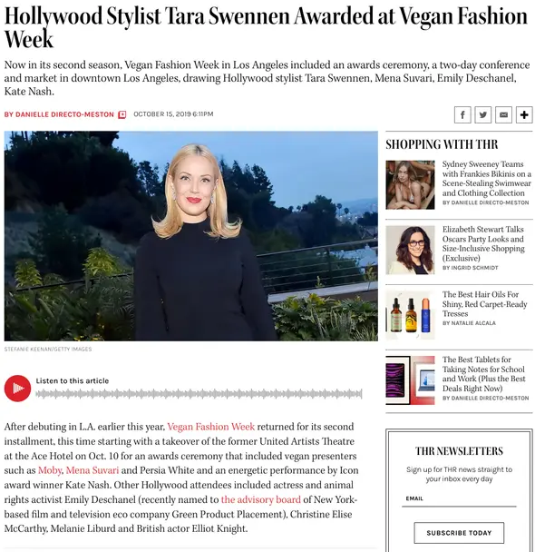
Purpose-driven partnerships
Alongside consumer brands, CMarie selectively partners with cultural & mission-driven organizations whose work deserves greater visibility and deeper community connection.
Debbie Allen Dance Academy ✦ Brass Tacks
About CMarie
Founder & Managing Director
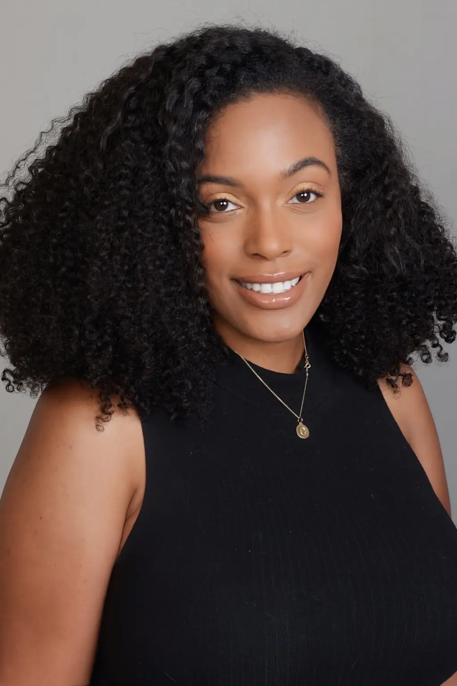
Crisanta White is a senior communications strategist with more than a decade of experience shaping how beauty, fashion, wellness, lifestyle, consumer & cultural brands show up in the world.
Across agency leadership, consulting partnerships & CMarie PR engagements, she has guided product launches, ongoing press programs, media sampling, influencer initiatives & more than 40 experiential activations. Her career work has earned attention from outlets including Vogue, WWD, Forbes, GQ, NewBeauty, mindbodygreen, Travel + Leisure & The Hollywood Reporter.
Her approach combines editorial instinct with a practical understanding of what makes a product relevant, a founder credible & a brand moment worth talking about.
Crisanta founded CMarie PR to give brands direct access to the kind of senior thinking, honest counsel & hands-on follow-through that can get separated from day-to-day execution at larger agencies.
Every client works directly with senior strategy from kickoff through execution. Engagements are intentionally scoped around what the brand needs now, with the flexibility to expand across earned media, influence & experiences.
Founder experience includes work with CAULIPOWER · Dickies Girl · Four Sigmatic · House of CB · NUDA · Oh Polly · The Organic Skin Co. · Grant Stone · Vegan Fashion Week · Walmart
Founder experience reflects work completed across prior agency roles, agency consulting partnerships & CMarie PR engagements.
Work with CMarie
Let’s build a focused PR plan around where your brand is now & where it wants to go next.
Book a discovery call Los Angeles, CA